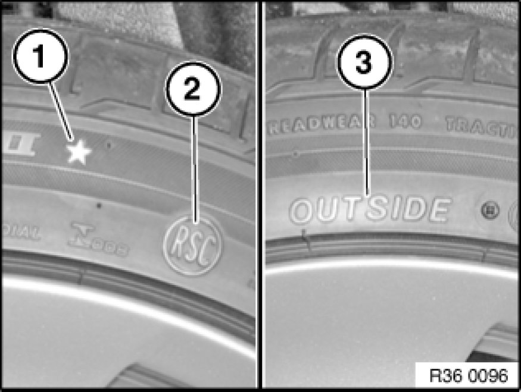
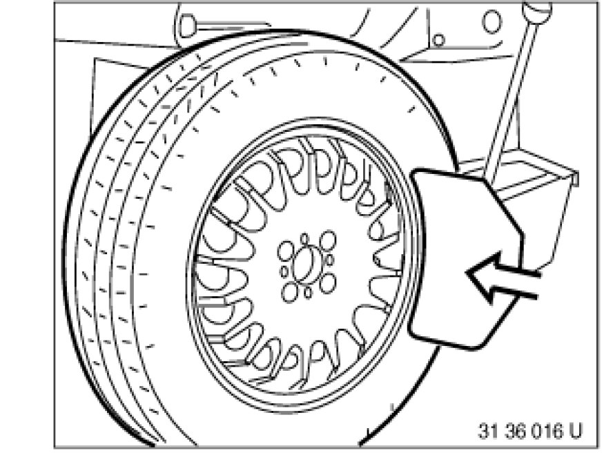
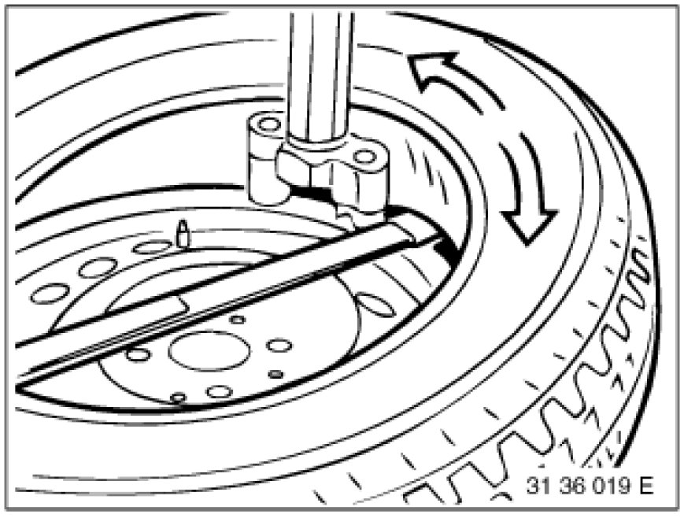

Replacing a Tire
36 12 001 - Replacing a tire

Refer to the operating manual of the relevant fitting equipment manufacturer for details on how to fit the tire correctly. However, it is essential to make sure that the equipment is in proper working condition and there is no damage to the disc wheel or the tire.
Note:
Comply with approved tires, tire sizes and optional extra.
Follow instructions on initializing run flat indicator:
- Run flat indicator 36 11 000 Initializing Run Flat Indicator (RPA) (RPA)

Note:
Pay attention to different tire markings:
- Item (1) Marking denoting BMW-approved tires. Ensure that only BMW-approved tires are fitted.
- Item (2) RSC is the abbreviation for Runflat System Component (runflat tires).
- Item (3) Outside. The tire must be fitted so that the wording Outside is always situated on the outside of the rim.
Important!
Many tires are directional!
The arrow on the tire must point in the direction of travel for each wheel!

Models with M Mobility system
If the tire was filled with the M-Mobility system after a puncture, it will be necessary before removal to drill an approx. 25 mm dia. hole in the side wall of the tire. Allow sealing compound to flow out through this bore and dispose of compound in compliance with environmental regulations. Clean disc wheel after removing tire.

Tire removal with a fitting machine:
Unscrew valve insert, discharge air, force off tire bead from rim flange with pressing-off horn of device on outside and inside.
If tire beads are stuck, first release the tire with the pressing-off horn at several points of the wheel before actually pressing off, apply tire mounting paste between tire and rim flange and press off the tires completely.
Pull off balance weights on rim and clean rim to remove large pieces of dirt.
Clamp wheel on mounting machine.
Narrow rim shoulder always faces upwards.
Important!
Vehicles with RDC:
To prevent the pressing-off horn from damaging the RDC wheel electronics, do not rest the pressing-off horn on both rim sides in the area of the valve.
Swing or fold mounting pillar into position and let it engage.
Adjust mounting head, pressing it on the rim edge fully, and turn down the lever for the clamp; normally the distance of the mounting head will set in automatically.
The valve should be approx. 15 cm to the right of the assembly head (so as to prevent the tire iron from damaging the wheel electronics).
Raise tire bead with tire iron over mounting finger.
Note:
On aluminium rims, it is best to use a tire iron coated (either fully or partially) with shrink-on plastic tubing to prevent damage.
Let fitting machine run back a short distance (counterclockwise); tire bead will slip fully onto mounting finger.
Then let fitting machine run forward in stages (clockwise).
In so doing, always check whether the lower bead is fully resting in the well and allow the tire time to move.
If the bead clamps, stop the machine and let it run back slightly.

If the upper bead is pulled off the rim, also lift the bottom bead over the mounting finger with the tire iron.
Let machine run back a short distance again and then forward (clockwise) briefly until there is complete separation of the tire from the rim.
Important!
Vehicles with RDC:
Tire bead must not press onto wheel electronics.
Release lock and tilt back or swing away mounting pillar.
Unclamp and clean rim.
Replace valve.
Coat rim flange and tire beads with mounting paste (refer to BMW Parts Service).
Important!
Vehicles with RDC:
When the wheel electronics are installed, the rim must not be cleaned with high-pressure cleaning equipment.
Visually inspect wheel electronics for external damage and check for tight fit; do not retighten screw and union nut. If one of the valve parts is loose, replace the entire valve.
Keep wheel electronics free of tire mounting paste.
Clamp rim on fitting machine, valve must be located at 180° to mounting head.
Slide on tire with lower bead partially over rim flange.
Swing or tilt mounting pillar into position and lock.
Check adjustment of mounting finger, readjusting if necessary, and clamp.
Press tire under mounting finger by hand.
Tire bead should seat in rollers next to mounting finger.
Let fitting machine run forward (clockwise) a short distance.
Lower tire bead will drop into well.
Important!
Vehicles with RDC:
Fit lower tire bead so that no pressure forces are exerted on wheel electronics.
Turn wheel again into fitting position so that valve is at 180° to mounting head.
Press upper tire bead under mounting finger. Tire bead should seat in rollers next to mounting finger.
Important!
Do not pinch or damage bead.
Operate fitting machine forwards (clockwise) little by little; while doing so, make sure the lower tire bead remains in the well.
Important!
Vehicles with RDC:
Fit upper tire bead so that no pressure forces are exerted on wheel electronics.
Important!
Possibilities for safely securing the wheel or incorporation in inflation apparatus should be utilized!
Observe national/country-specific regulations.
After mounting, first release clamps and then inflate tire (without valve).
Increase pressure up to 3.3 bar (330 kPa) in steps (jumping pressure).
If the tire bead does not slip on all round at the rim edge, do not increase pressure further but rather drain off air.
Press off tire bead again, coat rim flange again with tire mounting paste, refer to BMW Parts Service, and pump up again to 3.3 bar. When the beads are resting properly on the rim shoulders, increase inflation pressure to max. 4.0 bar to "settle" the tire.
Screw in valve insert and correct tire pressure.